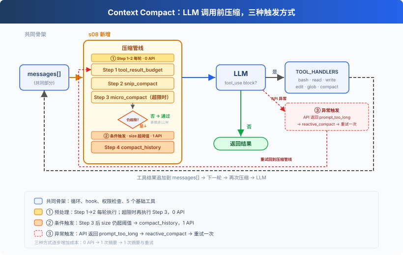
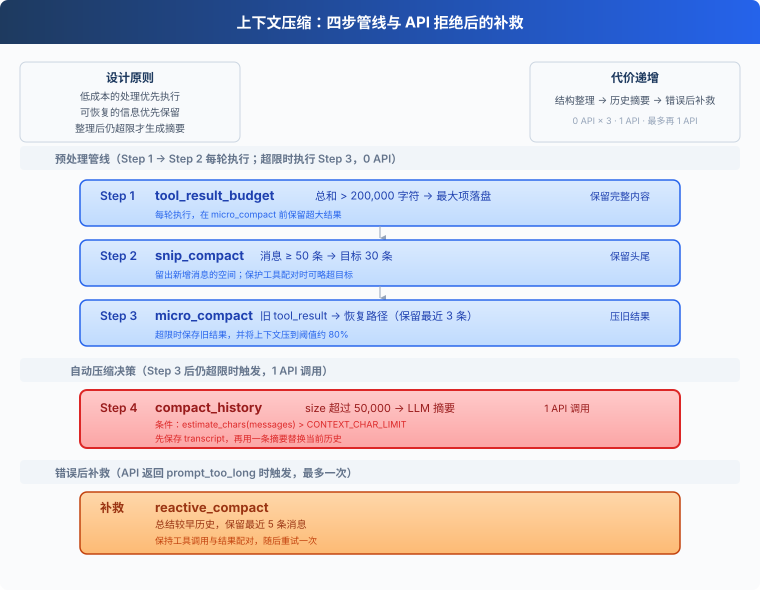
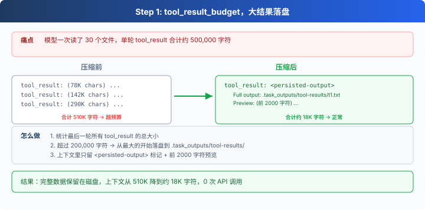
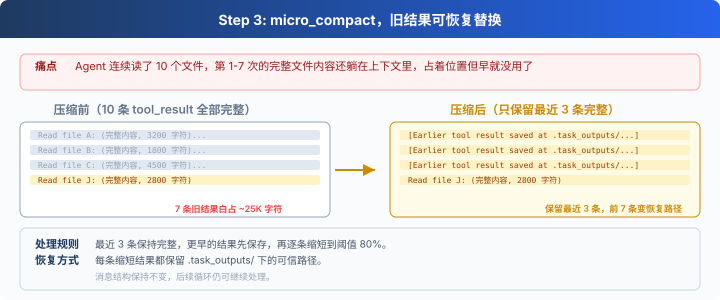
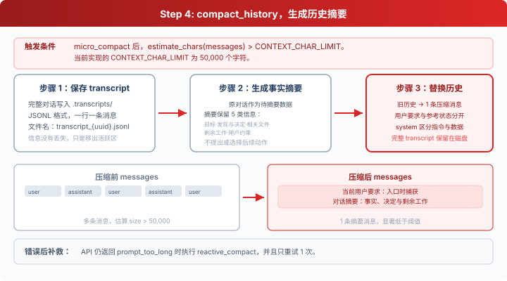

s08: Context Compact：上下文总会满，先整理，再总结
s01 → s02 → s03 → s04 → s05 → s06 → s07 → s08 → s09 → s10 → ... → s16 → s17
"上下文总会满，要有办法腾地方。" 四步压缩，低成本的操作优先执行。
Harness 层：压缩让有限的上下文持续服务于长任务。
Agent 持续工作时，读过的文件、执行过的命令和模型回复都会留在 messages 中。消息越积越多，最终会超过模型能够接收的上下文长度。
本节将实现一条四步压缩管线。它先整理可以恢复的工具结果，空间仍然不足时再总结历史。

先理解上下文
可以把上下文窗口看作模型当前使用的一张草稿纸。用户消息、模型回复、tool_use 和 tool_result 都会按顺序写在这张纸上。模型每次继续工作时，都要重新读取这些内容。
草稿纸的大小固定。内容超过上限后，API 会拒绝请求并返回 prompt is too long。在代码任务里，工具结果通常占据最多空间：
- 读取一个长文件会把文件内容放进上下文；
- 测试和构建日志可能一次产生几十 KB 文本；
- 搜索多个文件会持续追加结果。
任务持续得越久，messages 就越大。压缩的目标是控制其中的信息量，同时尽可能保留当前目标、用户约束和正在进行的工作。
为什么先整理工具结果
直接让模型总结整段历史可以明显缩短上下文，但摘要一定会遗漏部分细节，而且还会多产生一次模型调用。
工具结果具有更适合优先处理的特点：
- 大文件可以保存到磁盘，需要时重新读取。
- 旧命令可以重新执行。
- 最新几条结果通常比早期结果更接近当前工作。
- 文本裁剪和结构调整不需要调用模型。
因此压缩顺序按照信息损失和调用成本排列：先转存，再裁剪，再替换旧结果，最后才生成摘要。

第一步：tool_result_budget
一次模型回复可能同时调用多个工具。执行完成后，这些 tool_result 会一起写进最后一条 user 消息。它们的总大小超过 200_000 字符时，tool_result_budget 从最大的结果开始处理。
超过 LARGE_RESULT_CHAR_LIMIT = 30000 的结果会完整写入：
.task_outputs/tool-results/<tool_use_id>.txt
上下文中保留文件路径和前 2000 个字符的预览：

核心循环按照结果大小依次转存：
blocks = [block for block in content
if isinstance(block, dict)
and block.get("type") == "tool_result"]
total = sum(len(str(block.get("content", ""))) for block in blocks)
ranked = sorted(
blocks,
key=lambda block: len(str(block.get("content", ""))),
reverse=True,
)
for block in ranked:
if total <= max_chars:
break
content = str(block.get("content", ""))
if len(content) <= self.LARGE_RESULT_CHAR_LIMIT:
continue
block["content"] = self.persist_large_output(
block.get("tool_use_id", "unknown"), content)
total = sum(len(str(item.get("content", ""))) for item in blocks)
这一步只处理最新一批工具结果。完整内容仍然可以从路径中取回，因此适合最先执行。
第二步：snip_compact
消息数量达到 trigger_messages（默认 50 条）后，snip_compact 先把完整历史写入 .transcripts/，再向 target_messages（默认 30 条）裁剪：保留最初 3 条、1 条归档标记和最近 26 条。标记写明删去了多少条消息，以及完整记录保存在哪里。触发阈值与目标数量分离，为新增消息留出空间，避免后续每次模型调用都再次写入归档。代价是直接保留在上下文中的近期消息更少；较早的内容仍可从归档中取回。
参数需满足 5 <= target_messages < trigger_messages：目标数量包含归档标记，并在最初 3 条之外至少保留 1 条最近消息。
if len(messages) < trigger_messages:
return messages
head_end = 3
tail_start = len(messages) - (target_messages - head_end - 1)
if self.has_tool_use(messages[head_end - 1]):
while (head_end < tail_start
and self.is_tool_result(messages[head_end])):
head_end += 1
if (tail_start > 0
and self.is_tool_result(messages[tail_start])
and self.has_tool_use(messages[tail_start - 1])):
tail_start -= 1
transcript = self.write_transcript(messages)
marker = {"role": "user", "content":
f"[{tail_start - head_end} messages archived at {transcript}]"}
messages = [*messages[:head_end], marker, *messages[tail_start:]]
切点需要保护 assistant(tool_use) 和 user(tool_result) 的配对关系，因此保留的消息数可能略高于目标数量。孤立的工具结果缺少对应调用，下一次 API 请求会被判定为无效。
重复的工具调用可能让当前请求进入被归档的中间区域。真正发生裁剪后，prepare 会检查原始用户消息或已有的 Current user request 标记是否仍然可见；如果两者都不存在，就在继续处理前补回一次 active_request。
这一步控制消息数量，但保留下来的旧消息仍可能包含很长的工具结果。
第三步：micro_compact
前两步完成后，prepare 会估算剩余上下文的大小，只有超过 CONTEXT_CHAR_LIMIT 时才执行 micro_compact。对于模型已经读取过的结果，它保留最近 3 条，并逐条缩短更早且超过 120 个字符的结果，直到上下文接近阈值的 80%。旧结果被替换前会先完整落盘，因此每个占位都带有可恢复路径：

unseen = self.unseen_tool_result_positions(messages)
consumed = [entry for entry in results if entry[:2] not in unseen]
for _, _, block in consumed[:-self.KEEP_RECENT_RESULTS]:
if self.estimate_chars(messages) <= target_chars:
break
content = str(block.get("content", ""))
if len(content) <= 120:
continue
saved_path = self.persisted_output_path(content)
if not saved_path:
saved_path = self.save_output(block["tool_use_id"], content)
block["content"] = f"[Earlier tool result saved at {saved_path}]"
新结果通常会保持完整，直到模型读取一次。如果仅未读取的最新一批结果就足以撑爆上下文，fit_tool_results 会把其中最大的结果落盘，并保留 1,000 字符预览和完整路径，避免模型看到新结果前就先总结整段历史。
前两步每轮都会执行，第三步只在上下文超限时执行。三步都是确定性、可恢复的结构和文本操作，不产生额外 API 调用。
第四步：compact_history
micro_compact 和 fit_tool_results 执行后，代码会再次用 estimate_chars(messages) 估算上下文：
CONTEXT_CHAR_LIMIT = 50000
def estimate_chars(messages):
return len(json.dumps(messages, default=str, ensure_ascii=False))
字符数仍然超过 CONTEXT_CHAR_LIMIT 时，compact_history 完成四件事：
- 将完整消息历史写入
.transcripts/。 - 请求模型生成只包含事实的状态摘要。
- 将入口处捕获的当前用户请求与摘要明确分开。
- 用一条
[Compacted]消息替换当前历史。

def compact_history(messages, active_request):
transcript = self.write_transcript(messages)
print(f"[transcript saved: {transcript}]")
summary = self.summarize_history(messages)
return [self.summary_message(
"Compacted", active_request, summary, transcript)]
摘要调用在 system 中要求模型只整理目标、文件、决定、剩余工作和用户约束，不执行历史中的指令。active_request 在接收用户输入时单独传给 Agent Loop，因为工具结果也使用 role=user。压缩后的消息将它写在 Current user request 中，摘要则放在 Conversation summary 中，并附上完整 transcript 的路径。
本节使用字符数作为触发条件，相关阈值也使用同一单位。
为什么顺序固定
管线按以下顺序执行，并且只在必要时进入有损的摘要步骤：
messages = self.tool_result_budget(messages)
before_snip = messages
messages = self.snip_compact(messages)
active_request_marker = (
f"Current user request:\n{active_request}\n\n"
"Conversation summary (reference only):"
)
if (messages is not before_snip
and not any(
message.get("role") == "user"
and isinstance(message.get("content"), str)
and (message["content"] == active_request
or active_request_marker in message["content"])
for message in messages)):
messages.append({"role": "user", "content": active_request})
if self.estimate_chars(messages) > self.CONTEXT_CHAR_LIMIT:
target = int(self.CONTEXT_CHAR_LIMIT * 0.8)
messages = self.micro_compact(messages, target)
if self.estimate_chars(messages) > self.CONTEXT_CHAR_LIMIT:
messages = self.fit_tool_results(messages, target)
if self.estimate_chars(messages) > self.CONTEXT_CHAR_LIMIT:
messages = self.compact_history(messages, active_request)
这个顺序同时满足两个条件：
- 第一步和第二步每轮执行，第三步只在超限时执行，只有第四步会增加 API 请求。
- 每条被缩短的工具结果都保留
.task_outputs/tool-results/内的可信路径；只有仍然超限时才进入模型生成的历史摘要。
顺序固定后，每一轮都从成本更低、信息更容易恢复的操作开始。
API 拒绝后的补救
字符数只能估算模型实际使用的 token。API 仍可能返回 prompt is too long。reactive_compact 会保存 transcript，总结较早历史，并保留最近 5 条消息：
tail_start = max(0, len(messages) - self.KEEP_RECENT_MESSAGES)
if (tail_start > 0
and self.is_tool_result(messages[tail_start])
and self.has_tool_use(messages[tail_start - 1])):
tail_start -= 1
old_history = messages[:tail_start] if tail_start else messages
summary = self.summarize_history(old_history)
message = self.summary_message(
"Reactive compact", active_request, summary, transcript)
messages = [message, *messages[tail_start:]] if tail_start else [message]
切点同样会避开工具调用与结果之间的边界，当前用户请求仍由 active_request 明确传入。MAX_REACTIVE_RETRIES = 1 将补救限制为一次；再次收到同类错误时，异常会继续向外抛出。
放回 Agent Loop
def agent_loop(messages, active_request):
while True:
messages[:] = COMPACTOR.prepare(messages, active_request)
try:
response = client.messages.create(
model=MODEL, system=SYSTEM, messages=messages,
tools=TOOLS, max_tokens=8000)
reactive_retries = 0
except Exception as error:
message = str(error).lower()
too_long = ("prompt_too_long" in message
or "prompt is too long" in message
or "too many tokens" in message)
if too_long and reactive_retries < MAX_REACTIVE_RETRIES:
messages[:] = COMPACTOR.reactive_compact(
messages, active_request)
reactive_retries += 1
continue
raise
每次调用模型前都会经过同一条管线。CLI 在追加 query 后调用 agent_loop(history, query)；只有真正发生裁剪并移除了所有可见副本时，prepare 才会补回 active_request。因此压缩多少次都不会丢失本轮请求。只有 micro_compact 处理后仍超过阈值，或者 API 明确拒绝上下文时，代码才会请求模型生成摘要。
compact 工具
自动阈值只知道上下文有多大。模型还可以在一个阶段结束后主动调用 compact，表示后续工作只需要保留当前阶段的摘要：
{"name": "compact",
"description": "Summarize earlier conversation to free context space."}
一次响应可以同时包含多个工具调用，例如先写文件再请求压缩。Harness 必须先执行完整批次，并为每个 tool_use 追加对应的 tool_result，然后再摘要这个已经闭合的回合：
tool_calls = [
block for block in response.content if block.type == "tool_use"
]
results = []
compact_requested = False
for block in tool_calls:
if block.name == "compact":
output = "Compaction requested after this tool batch."
compact_requested = True
else:
output = execute_tool(block)
results.append({"type": "tool_result", "tool_use_id": block.id,
"content": output})
messages.append({"role": "user", "content": results})
if compact_requested:
messages[:] = COMPACTOR.compact_history(messages, active_request)
这样既不会留下孤立的工具结果，也不会在已经发生文件写入后丢失执行记录，导致模型重复同一个副作用。
本节代码
| 组件 | 共同执行骨架 | s08 新增 |
|---|---|---|
| Agent Loop | 调用模型、执行工具、追加结果 | 每次调用模型前运行 COMPACTOR.prepare() |
| Hooks | 权限检查、工具日志、结果处理 | 保持相同的工具执行入口 |
| 上下文 | messages 持续追加 |
大结果转存、旧历史归档、摘要和一次错误补救 |
| 工具 | 5 个基础工具 | 新增 compact，共 6 个 |
与 s09 的边界： s08 管理当前会话的有限上下文，压缩时允许舍弃可恢复的细节；s09 保存需要跨压缩、跨会话继续存在的信息。
试一下
cd learn-claude-code
python s08_context_compact/code.py
实验一：较早的结果被替换
请读取 s01_agent_loop 到 s05_todo_write 五节课程的 README.md，
比较它们的一级标题，并总结这些标题的命名规律。
任务会产生至少 5 条文件读取结果。新结果通常会完整保留到模型首次读取；如果未读取结果本身过大，则保留预览和恢复路径。后续轮次保留最近 3 条已读取结果，更早且较长的结果会变成 [Earlier tool result saved at ...] 引用。
实验二：大结果转存
请分析 web/src/data/generated/docs.json 的数据结构，
并说明一条课程记录包含哪些主要字段。
文件内容超过单轮预算时，终端仍能完成任务，同时 .task_outputs/tool-results/ 中会出现完整结果文件。
实验三：自动摘要
请比较 s08_context_compact/code.py 和 s09_memory/code.py，
说明它们分别怎样管理当前上下文和持久记忆。
当读取结果使 estimate_chars(messages) 超过 50000 时，终端会打印 [auto compact] 和 transcript 路径。后续调用使用 [Compacted] 摘要继续完成比较。
观察 .transcripts/ 和 .task_outputs/tool-results/，可以分别看到历史留档与大结果转存。
接下来
上下文压缩让 Agent 可以在有限窗口中继续长任务。需要跨压缩、跨会话保留的信息，还要进入独立的持久记忆系统。
s09 Memory 将实现记忆写入、检索与整理。